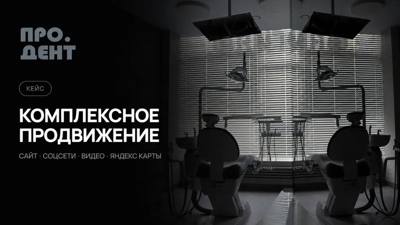

Оформление и запуск
Проверим описание, контакты, меню и способы записи. Оформим сообщество и подготовим первые материалы, чтобы посетитель быстро разобрался в услугах.
SMM и ведение соцсетей в Воронеже
У вас есть что показать клиентам, но на публикации постоянно не хватает времени. Берём соцсети на себя: объясняем, чем вы полезны, показываем работу и помогаем человеку сделать следующий шаг.
Страница давно не обновлялась, в сообщениях повторяются одни и те же вопросы, а по публикациям трудно понять, что у вас можно купить. Начинаем с предложения и оформления. Затем выстраиваем регулярную работу с контентом.
Проверим описание, контакты, меню и способы записи. Оформим сообщество и подготовим первые материалы, чтобы посетитель быстро разобрался в услугах.
Соберём контент-план, напишем тексты, подготовим публикации и согласуем их с вами. Частоту выхода, форматы и работу с сообщениями зафиксируем до старта.
Покажем сотрудников, продукт, процесс и готовые работы. Используем ваши материалы или согласуем съёмку. Каждый пост будет отвечать на вопрос клиента или раскрывать услугу.
Проверим, куда ведут ссылки и как человеку записаться, заказать или задать вопрос. При необходимости свяжем сообщество с сайтом, рекламой и чат-ботом.
Вы получите оформленную площадку, согласованные рубрики и понятный порядок публикаций. При регулярном ведении будем смотреть, какие материалы приводят к интересу и обращениям, и корректировать план.

Из нашей практики
Для стоматологической клиники оформили соцсети, сняли видео о врачах и подготовили сайт с онлайн-записью. Пациент может познакомиться со специалистом до визита.
Посмотреть проект ↗На стоимость влияют количество площадок, частота публикаций, объём съёмки и работа с сообщениями. Разовое оформление и регулярное ведение считаем отдельно. Если нужна реклама, согласуем её бюджет и настройку.
Работаем с бизнесом Воронежа и области. Задачу и материалы можно обсудить онлайн. Сроки фиксируем после того, как определим объём работ.
Получить расчёт для моей задачи ↗Да. Подготовим оформление и материалы для старта, передадим доступы и объясним, как продолжить самостоятельно. Регулярное ведение можно обсудить позже.
Можем работать с вашими материалами или организовать съёмку в Воронеже и области. Темы, объём, место и стоимость съёмки согласуем заранее.
Сначала проверим, готова ли страница принимать посетителей: понятны ли услуги, актуальны ли контакты, удобно ли написать. После этого обсудим рекламный запуск и бюджет.
Обсудим ваш проект
Пришлите ссылку на сайт или соцсеть и коротко опишите задачу. Ответим в течение рабочего дня.
+7 952 101 90 67